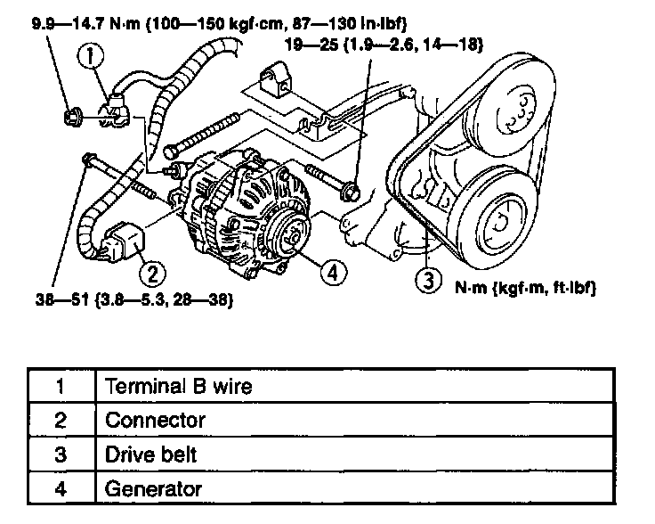

Alternator: Service and Repair
WARNING: When the battery cables are connected, touching the vehicle body with generator terminal B will generate sparks. This can cause personal injury, fire, and damage to the electrical components. Always disconnect the battery before performing the following operation.
1. Disconnect the negative battery cable.
2. Remove the intake manifold bracket.
3. Remove in the order indicated in the table.
4. Install in the reverse order of removal.
5. Inspect the drive belt deflection/tension.